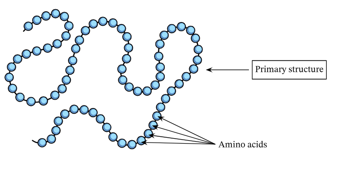
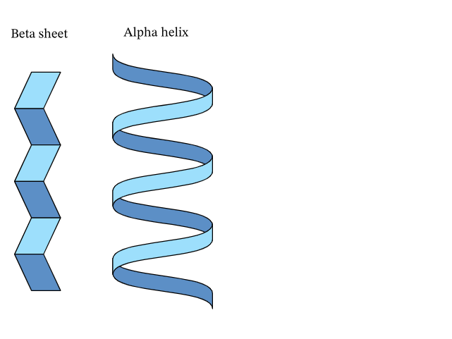
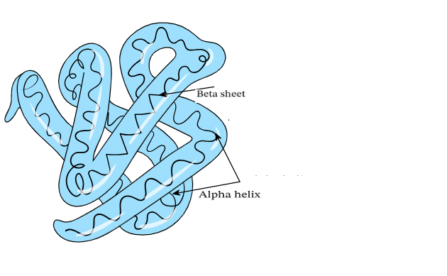
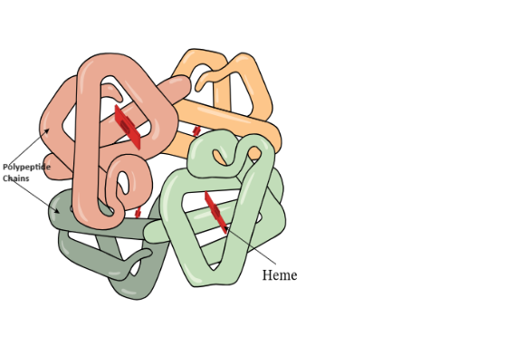

What are proteins made of and how do they get their shape? This animation is based on a great video made by DeLano Scientific LLC using PyMol
Importance of Protein Structure
Protein folding is the descriptions of a three-dimensional structure of amino-acids chain, arranged in space to become the biologically functional protein. Understanding the structure of protein is highly valuable for various application within medicine.

Primary Structure
The primary structure of a protein is the sequence of amino acids bonded together in a polypeptide chain. The amino acids are held in place by peptide bonds.
Proteins are made up of a long chain of amino acids. Even with a limited number of amino acid monomers – there are only 20 amino acids commonly seen in the human body – they can be arranged in a vast number of ways..

Secondary Structure
The secondary protein structure depends on the local interactions between parts of a protein chain, which can affect the folding and three-dimensional shape of the protein.
There are two main things that can alter the secondary structure:
α-helix: N-H groups in the backbone form a hydrogen bond with the C=O group of the amino acid 4 residues earlier in the helix.
β-pleated sheet: N-H groups in the backbone of one strand form hydrogen bonds with C=O groups in the backbone of a fully extended strand next to it.
There can also be a several functional groups such as alcohols, carboxamines, carboxylic acids, thioesters, thiols, and other basic groups linked to each protein. These functional groups also affect the folding of the proteins and, hence, its function in the body.
The secondary structure of a protein is the alpha-helix and beta-sheet shapes that a polypeptide chain can form. The secondary structure is held in place by hydrogen bonds.

Tertiary Structure
The tertiary structure of a protein is the folding pattern between the alpha helices and beta sheets which gives the polypeptide a three-dimensional form. A variety of bond types hold the tertiary structure of the protein in place. These include hydrogen bonds, disulfide bonds, and ionic bonds. The tertiary structure is also determined by hydrophobic interactions between the nonpolar side chains of some amino acids, which are repelled by water and attracted to each other.
The tertiary structure of a protein describes the 3-dimensional arrangement of the alpha helices and beta sheets of one polypeptide. The tertiary structure is held in place by different covalent and noncovalent bonds.

Quaternary Structure
A finished and functional protein may be made of more than one polypeptide chain, in their tertiary structures, closely associated and bonded together. This is called the “quaternary structure of a protein.” Different parts of the folded polypeptide chains interact in different ways which holds them in place and also influences the job they are able to do. The quaternary structure is held in place by hydrogen bonds, disulfide bonds, ionic bonds, and hydrophobic interactions, similar to the tertiary structure of the protein.
The quaternary structure of a protein consists of more than one polypeptide, in their tertiary structures, bonded together. The quaternary structure is held in place by different covalent and noncovalent bonds.